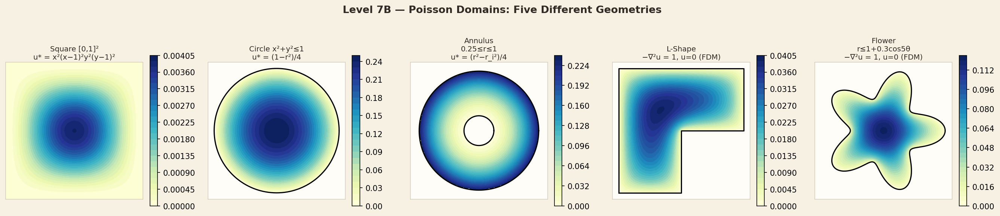
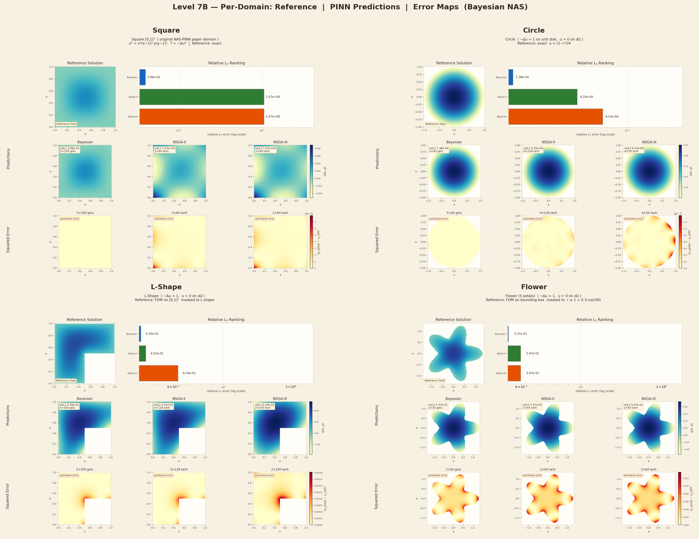
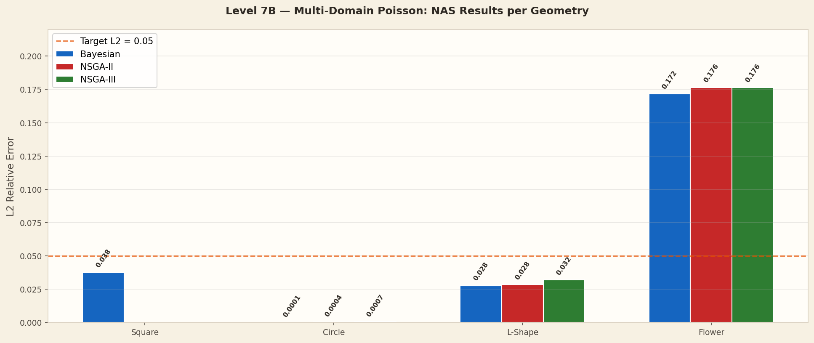
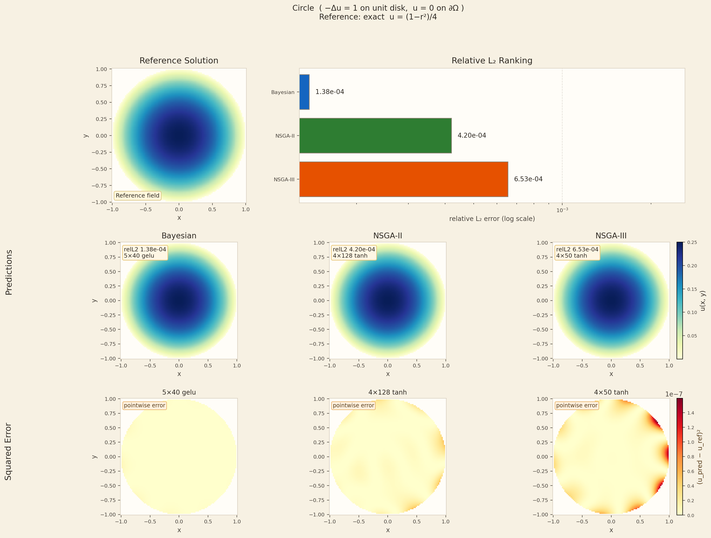
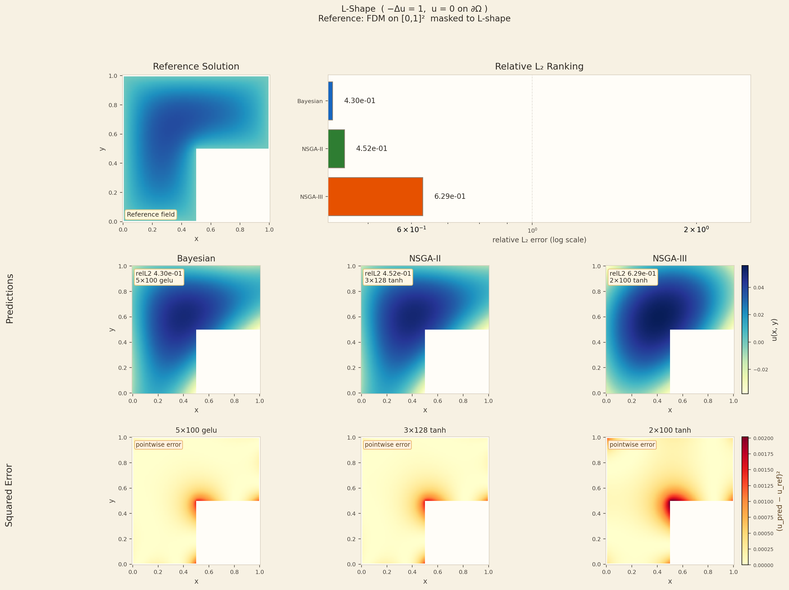
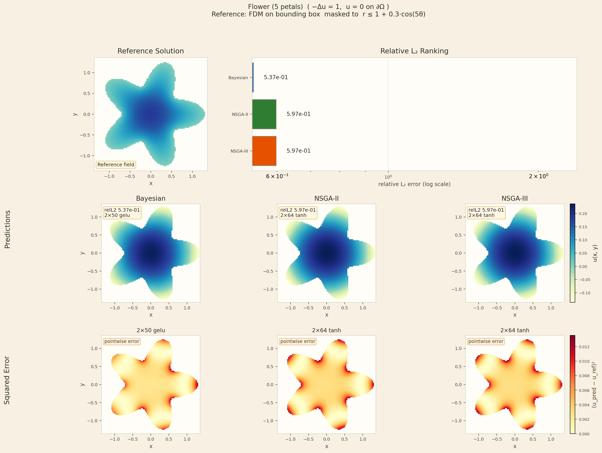

Visualisations
Domain Plots and Predictions
Domain Shapes with Reference Solutions

All 5 geometries with colour-mapped exact/FDM reference solutions. Left: Square · Circle · Annulus. Right: L-Shape · Flower.
PINN Predictions and L2 Error Maps

Side-by-side: PINN predicted field and pointwise L2 error for Square, Circle, L-Shape, Flower. Generated from high-quality l7b_*.png plots.
Multi-Domain L2 Results

Grouped bar chart of L2 errors for all three NAS optimisers across four evaluated geometries.
Square Domain — PINN Solution

PINN prediction, reference, and error map for Square domain.
Circle Domain — PINN Solution

Circle domain — best result overall. L2=0.00014 for Bayesian.
L-Shape Domain — PINN Solution

Re-entrant corner domain. Bayesian achieves L2=0.0277.
Flower Domain — PINN Solution

Hardest domain. Best L2=0.172 — the complex boundary challenges all architectures.